9 L09: GIS III
9.1 Mapping Categorical and Continuous Data
library(tidyverse)
library(ggspatial)
library(ggplot2)
library(ggrepel)
library(rnaturalearth)
library(rnaturalearthdata)
world <- ne_countries(scale = "medium", returnclass = "sf")9.1.1 Goals
Basic strategies for mapping data.
9.1.2 Software
- R
9.1.3 Data
library(historydata)
library(europop)## Warning: package 'europop' was built under R version 4.0.2#help(package = historydata)
#help(package = europop)We will use data from packagess europop and historydata.
9.1.3.1 Some Vienna Data
Source: https://www.data.gv.at/katalog/dataset/stadt-wien_bezirksgrenzenwien. Download SHP file. You can load it, using the following code. (The file must be unzipped: BEZIRKSGRENZEOGD is the default folder; BEZIRKSGRENZEOGDPolygon is the name of most files in the unzipped folder)
- map of districts of Vienna (SHP/shape file);
- population of Vienna (csv file)
library(rgdal) # R wrapper around GDAL/OGR
library(ggmap) # for fortifying shapefiles (converting GIS files into data frames)
library(ggplot2) # ggplot2 libraryLoading SHP file, like we did before. plot() allows us to quickly assess whether data was loaded correctly.
wienBezirks <- readOGR("./data_temp/BEZIRKSGRENZEOGD", "BEZIRKSGRENZEOGDPolygon")## OGR data source with driver: ESRI Shapefile
## Source: "/Users/romanovienna/Dropbox/6_Teaching_New/_rgis_course/rgis_univie2021_draft/data_temp/BEZIRKSGRENZEOGD", layer: "BEZIRKSGRENZEOGDPolygon"
## with 23 features
## It has 15 fieldsplot(wienBezirks)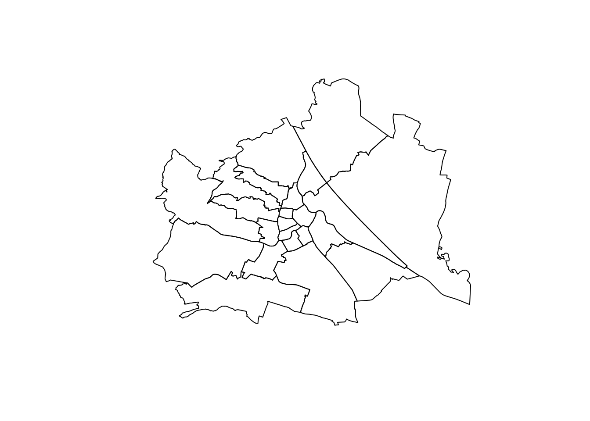
Loading our data on the growth of Vienna…
library(readr)
wienBezirksData <- read_csv("data_temp/wien_data/Wien_Stadt_Data.csv")## Parsed with column specification:
## cols(
## Bezirk_Nummer = col_character(),
## Bezirk_Name = col_character(),
## Kategorie = col_character(),
## Jahr = col_double(),
## Daten = col_double()
## )head(wienBezirksData)## # A tibble: 6 x 5
## Bezirk_Nummer Bezirk_Name Kategorie Jahr Daten
## <chr> <chr> <chr> <dbl> <dbl>
## 1 11 Simmering Häuser 1590 207
## 2 11 Simmering Häuser 1751 225
## 3 11 Simmering Häuser 1783 281
## 4 11 Simmering Häuser 1787 281
## 5 11 Simmering Häuser 1794 329
## 6 11 Simmering Häuser 1795 3199.2 Maps
9.2.1 Choropleth: Population of Vienna over time
Choropleth map is very commonly used to visualize spatial data. Polygons are colored and the intensity of color (or change from one color to another with some color scale) is used to indicate continuous values Less frequently, this type of maps is also used for categorical data.
fortify is a function that converts a coomplex SHP object into a dataframe that ggplot2 can understand; parameter region is important — here you assign data from which column of the original shape file must be associated with the elements in new dataframe. We want to associate all polygons with districts (BEZ contains district numbers — in the same format as we have in wienBezirksData: 01, 02, 03, etc.). The operation is quite simple, but crucial.
wienBezirksMod <- fortify(wienBezirks, region = "BEZ")Now, we need to process somme data and then we can map it with ggplot. In the chunk below we simply pick data for a specific year.
wienBezirksDataTemp <- wienBezirksData %>%
filter(Kategorie=="Einwohner" & Jahr == 2011)Now, for adding labels to our map, we need to generate coordinates for where those labels will be added. The following chunk calculated average mean of all latitude and longitude values for each district.
distcenters <- wienBezirksMod %>%
group_by(id) %>%
dplyr::summarize(clat = mean(lat), clong = mean(long)) %>%
left_join(wienBezirksData, by = c("id" = "Bezirk_Nummer")) %>%
select(id, clat, clong, Bezirk_Name) %>% unique %>%
mutate(label = paste0(id, ". ", Bezirk_Name))Now we can put everything on the graph.
ggplot() +
geom_map(data = wienBezirksDataTemp, aes(map_id = Bezirk_Nummer, fill = Daten),
map = wienBezirksMod) + expand_limits(x = wienBezirksMod$long, y = wienBezirksMod$lat) +
geom_text_repel(data = distcenters, aes(x = clong, y = clat, label = label), size = 2) +
scale_fill_gradient(low = "white", high = "red", na.value = NA) +
labs(title="Population of Vienna, 2011", x ="", y = "")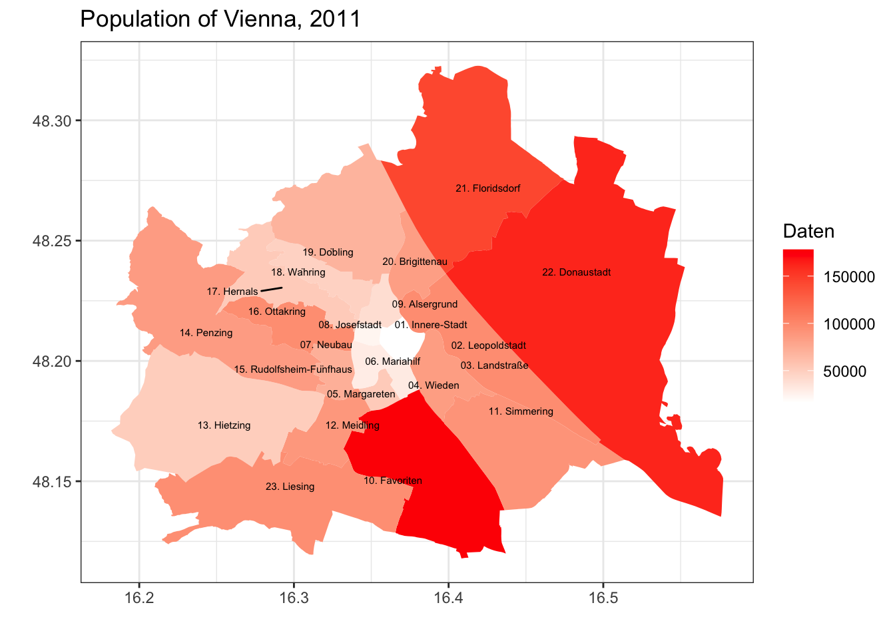
As you already know, we can generate multiple maps to visualize different aspects of our data. With of Viennese data, we can generate graphs by years.
wienBezirksDataTemp <- wienBezirksData %>%
filter(Kategorie=="Einwohner" & Jahr >= 1857) %>%
filter(Jahr != 1864)
ggplot() +
geom_map(data = wienBezirksDataTemp, aes(map_id = Bezirk_Nummer, fill = Daten),
map = wienBezirksMod) + expand_limits(x = wienBezirksMod$long, y = wienBezirksMod$lat) +
scale_fill_gradient2(low = "white", mid="yellow", high = "red", na.value = NA) +
facet_wrap(~ Jahr) +
labs(title="Growth of Vienna, 1857-2011", x ="", y = "")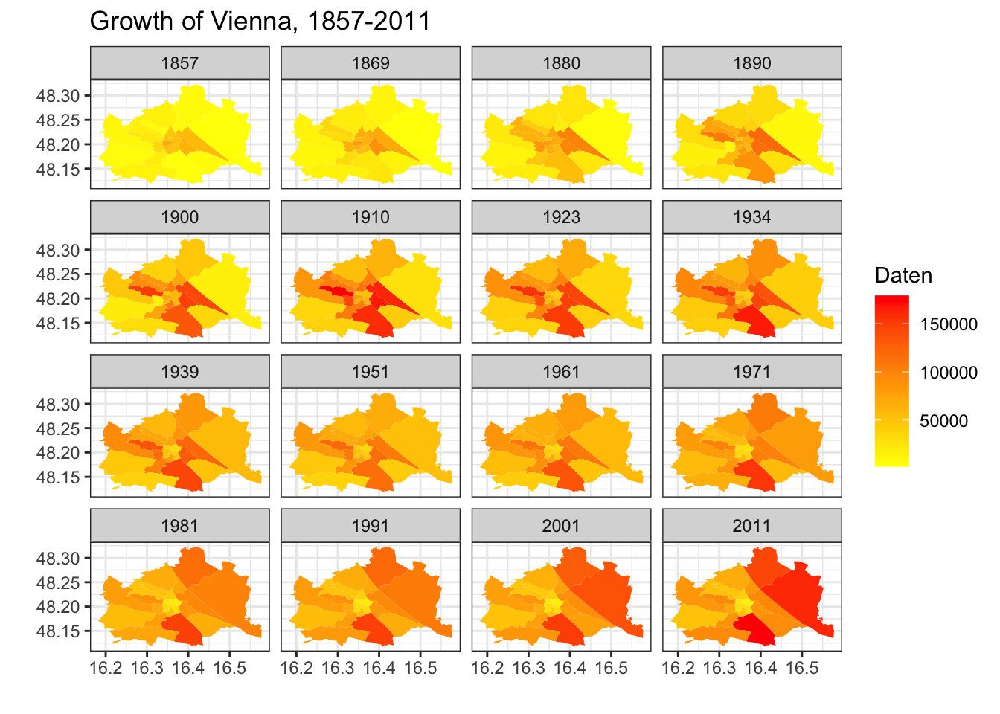
Advantages and drawbacks of choroplleth maps?
Homework: generate similar maps for the growth of the US (of the state level), using data from historydata. You will need to preprocess data properly. Also, feel free to experiment with the visual parameters. Use help or google for more details.
Additional Materials:
9.2.2 Dots: Population Growth - US population (by city)
In some (or, probably, most) cases, it might be better to avoid choropleth maps. Instead, we can use dots sized with specific parameters. But first, let’s prepare our base layer.
waterColor = "lightsteelblue2"
xlim=c(-140, -50); ylim=c(20,55)
baseplot <- ggplot(data = world) +
geom_sf(fill="white", color="white") +
coord_sf(xlim = xlim, ylim = ylim, expand = FALSE)
themeParameters <- theme(panel.background = element_rect(fill = waterColor),
axis.title.y=element_blank(),
axis.title.x=element_blank(),
axis.text.x=element_blank(),
axis.ticks.x=element_blank(),
axis.text.y=element_blank(),
axis.ticks.y=element_blank(),
panel.grid.major = element_line(color = waterColor, linetype = "dotted", size = 0.5))
baseplot + themeParameters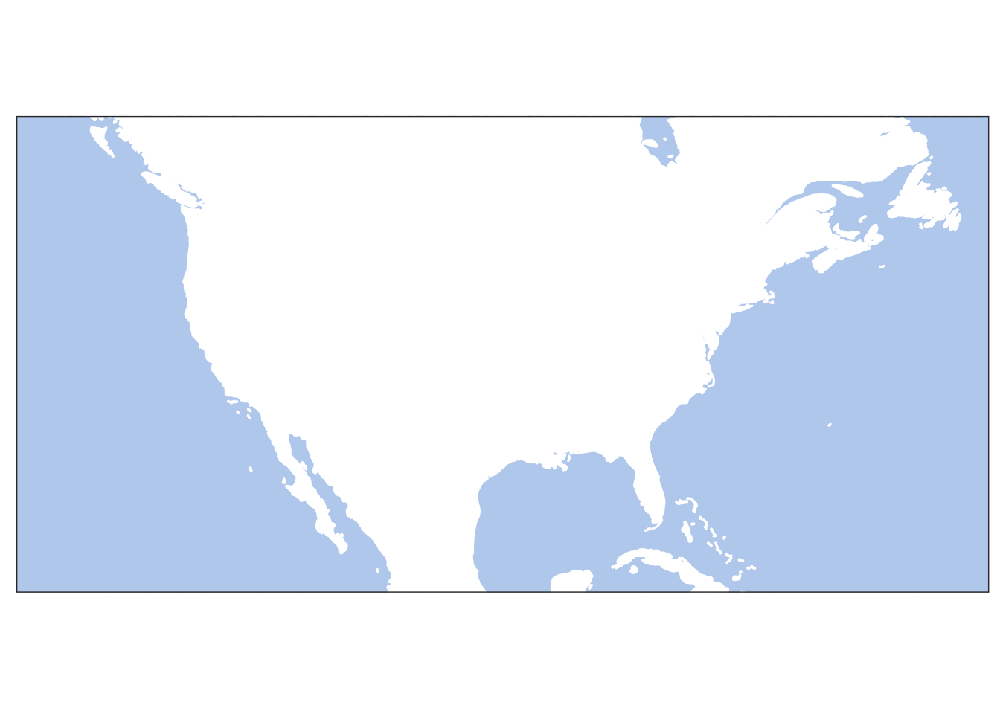
Homework: update this map by adding lakes and rivers. (See the previous lesson to refresh how this can be done.)
Let’s try to add some historical data: us_cities_pop dataset gives us data by decades.
us_data <- historydata::us_cities_pop %>%
filter(year >= 1790 & year <= 1900)
baseplot +
geom_point(data = us_data, aes(x=lon, y=lat, size=population), alpha = 0.02) +
scale_size_continuous(range = c(0.05, 3)) +
facet_wrap(~ year) +
labs(title="Growth of the USA, 1790-1900", x ="", y = "") +
themeParameters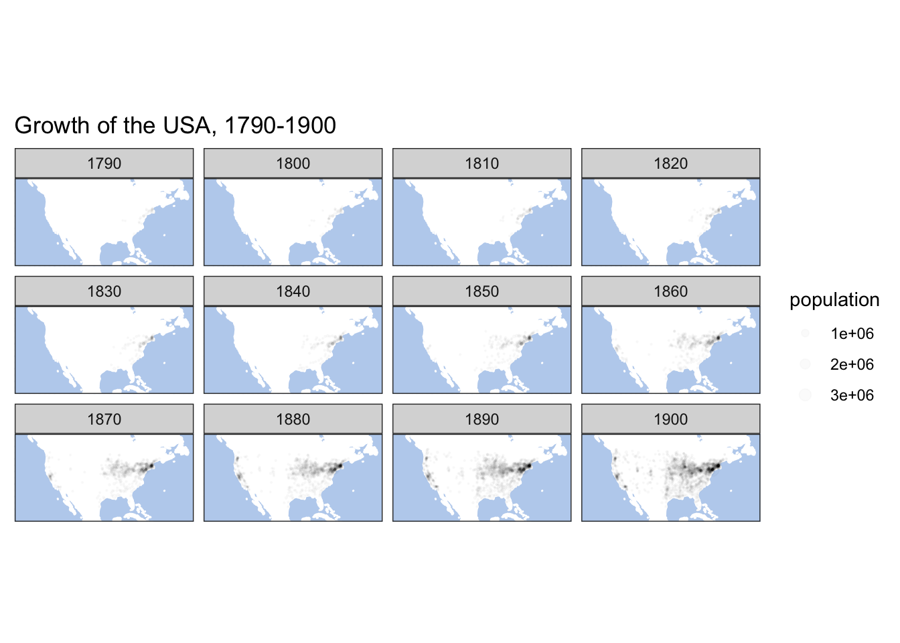
us_data <- historydata::us_cities_pop %>%
filter(year >= 1900)
baseplot +
geom_point(data = us_data, aes(x=lon, y=lat, size=population), alpha = 0.02) +
scale_size_continuous(range = c(0.05, 3)) +
facet_wrap(~ year) +
labs(title="Growth of the USA, 1900-2010", x ="", y = "") +
themeParameters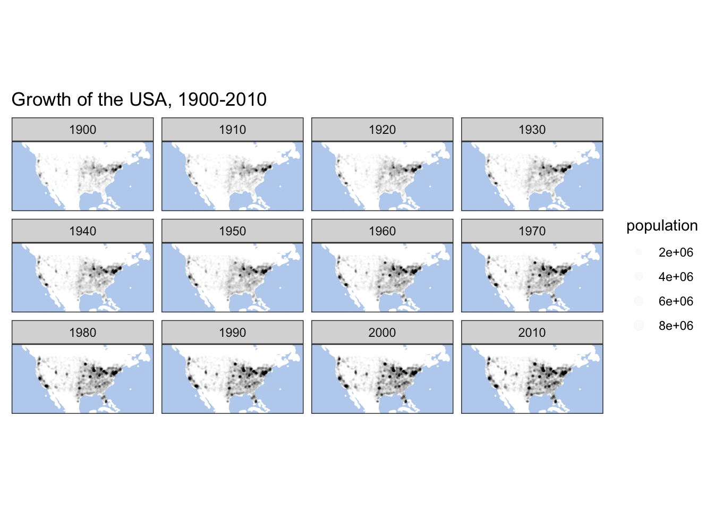
This kind of maps give a nice insight into such processes as growth of territories. Dots, of course, can be used to map any quantitative parameter.
9.2.3 Graphs: Population Growth by State
Sometimes, however, we might opt out of using maps. Package geofacet (more on this package) offers a differnt approach: it offers the use of suggestive tables instead of maps. Below you can find a code sample that visualizes the same data as we had above.
#install.packages("geofacet")
library(geofacet)## Warning: package 'geofacet' was built under R version 4.0.2us_states_pop <- historydata::us_cities_pop %>%
group_by(state, year) %>%
dplyr::summarize(population = sum(population))## `summarise()` has grouped output by 'state'. You can override using the `.groups` argument.graph01 <- ggplot(us_states_pop, aes(year, population)) +
geom_line() +
facet_geo(~ state, grid = "us_state_grid2", label = "name") +
labs(title = "Growth of the US, 1790-2010",
caption = "Data Source: `historydata`",
x = "Year",
y = "Population") +
theme(axis.text.x = element_text(angle = 90))## Some values in the specified facet_geo column 'state' do not match the
## 'code' column of the specified grid and will be removed: ITggsave("us_facet_map.png", plot=graph01, width = 400, height = 200, units = "mm", dpi = "retina")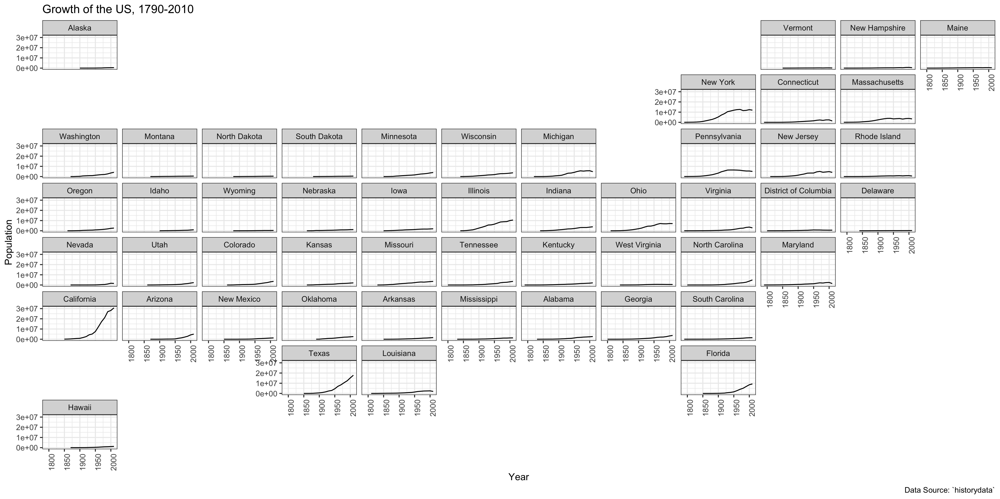
Homework: check documentation on geofacet (https://cran.r-project.org/web/packages/geofacet/vignettes/geofacet.html). The package has an interface to develop custom grid. Develop a grid for Viennese districts and plot the growth of their population using your custom grid.
Grid designer is available here: https://hafen.github.io/grid-designer/. You will need some data for an easy start:
wien_starting_grid <- distcenters %>%
mutate(row = seq(1,23), col=seq(1,23)) %>%
mutate(code = id, name = label) %>%
select(row,col,code,name)You can start it with the following line of code:
grid_design(data = wien_starting_grid, img = "https://upload.wikimedia.org/wikipedia/commons/thumb/1/1f/Vienna%2C_administrative_divisions_-_Nmbrs.svg/2880px-Vienna%2C_administrative_divisions_-_Nmbrs.svg.png")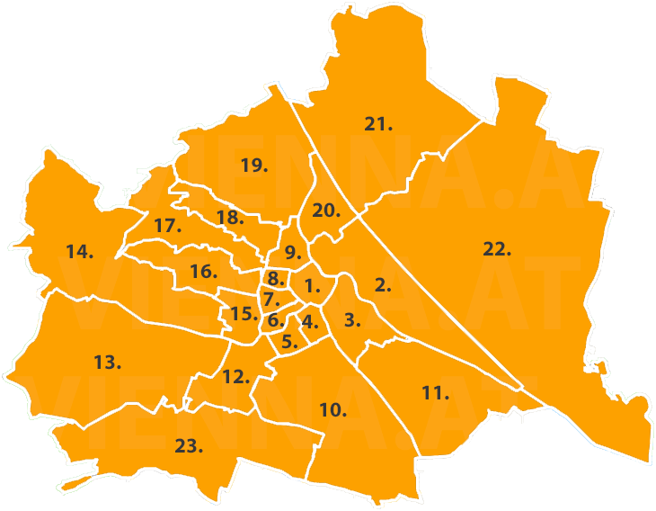
mygrid <- data.frame(
row = c(5, 4, 4, 4, 5, 5, 6, 6, 6, 10, 11, 12, 13, 14, 15, 16, 17, 18, 19, 20, 21, 22, 23),
col = c(9, 9, 8, 7, 8, 7, 9, 8, 7, 10, 11, 12, 13, 14, 15, 16, 17, 18, 19, 20, 21, 22, 23),
code = c("02", "09", "08", "07", "01", "06", "03", "04", "05", "10", "11", "12", "13", "14", "15", "16", "17", "18", "19", "20", "21", "22", "23"),
name = c("02. Leopoldstadt", "09. Alsergrund", "08. Josefstadt", "07. Neubau", "01. Innere-Stadt", "06. Mariahilf", "03. Landstraße", "04. Wieden", "05. Margareten", "10. Favoriten", "11. Simmering", "12. Meidling", "13. Hietzing", "14. Penzing", "15. Rudolfsheim-Fünfhaus", "16. Ottakring", "17. Hernals", "18. Währing", "19. Döbling", "20. Brigittenau", "21. Floridsdorf", "22. Donaustadt", "23. Liesing"),
stringsAsFactors = FALSE
)
geofacet::grid_preview(mygrid)## Note: You provided a user-specified grid. If this is a generally-useful
## grid, please consider submitting it to become a part of the geofacet
## package. You can do this easily by calling:
## grid_submit(__grid_df_name__)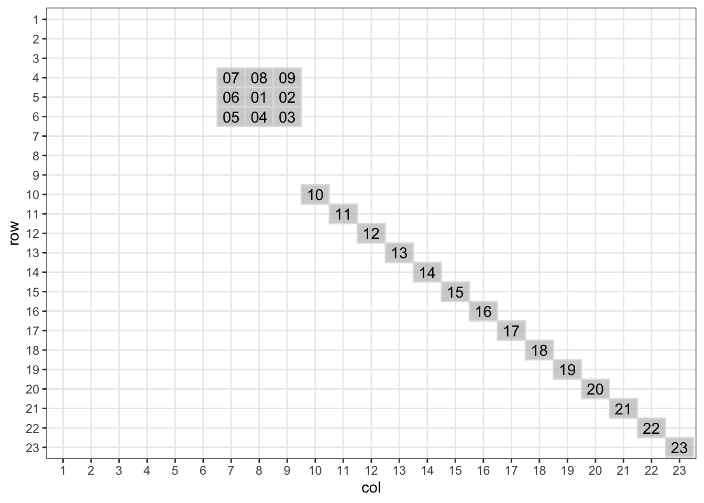
Optional: complete the same task for the europop dataset (library europop).
9.2.4 Many Maps: Population by city — growth of the US
You might need to generate multiple high-resolution maps, instead of a set of tiny faceted maps. For this purpose loops are very helpful. They are a powerful tool and one should know how to use them. Below is an example of a very simple for loop. The our loop prints single letters—one after another—from a built-in vector/variable letters. (as you might remember from the early worksheets, letters is a built-in vector of English letters.)
string <- "This is letter"
for(l in letters){
print(paste(string, l))
}## [1] "This is letter a"
## [1] "This is letter b"
## [1] "This is letter c"
## [1] "This is letter d"
## [1] "This is letter e"
## [1] "This is letter f"
## [1] "This is letter g"
## [1] "This is letter h"
## [1] "This is letter i"
## [1] "This is letter j"
## [1] "This is letter k"
## [1] "This is letter l"
## [1] "This is letter m"
## [1] "This is letter n"
## [1] "This is letter o"
## [1] "This is letter p"
## [1] "This is letter q"
## [1] "This is letter r"
## [1] "This is letter s"
## [1] "This is letter t"
## [1] "This is letter u"
## [1] "This is letter v"
## [1] "This is letter w"
## [1] "This is letter x"
## [1] "This is letter y"
## [1] "This is letter z"We can use the same strategy to loop over some table of our data and generate maps based on the changing parameter. For example, we want to generate maps of U.S. cities, where each map would show us data forr a specific decade. Let’s try a simple example first: let’s generate headers for our future maps.
us_data <- historydata::us_cities_pop
decades <- unique(us_data$year)
for (d in decades){
header <- paste0("U.S. cities in ", d)
print(header)
}## [1] "U.S. cities in 1790"
## [1] "U.S. cities in 1800"
## [1] "U.S. cities in 1810"
## [1] "U.S. cities in 1820"
## [1] "U.S. cities in 1830"
## [1] "U.S. cities in 1840"
## [1] "U.S. cities in 1850"
## [1] "U.S. cities in 1860"
## [1] "U.S. cities in 1870"
## [1] "U.S. cities in 1880"
## [1] "U.S. cities in 1890"
## [1] "U.S. cities in 1900"
## [1] "U.S. cities in 1910"
## [1] "U.S. cities in 1920"
## [1] "U.S. cities in 1930"
## [1] "U.S. cities in 1940"
## [1] "U.S. cities in 1950"
## [1] "U.S. cities in 1960"
## [1] "U.S. cities in 1970"
## [1] "U.S. cities in 1980"
## [1] "U.S. cities in 1990"
## [1] "U.S. cities in 2000"
## [1] "U.S. cities in 2010"Now we can modify this code so that it generates maps:
us_data <- historydata::us_cities_pop
decades <- unique(us_data$year)
for (d in decades){
header <- paste0("U.S. cities in ", d)
dataTemp <- us_data %>%
filter(year == d)
mapTemp <- baseplot +
geom_point(data = dataTemp, aes(x=lon, y=lat, size=population), alpha = 0.5) +
scale_size_continuous(range = c(0.05, 5)) +
labs(title=header, x ="", y = "") +
themeParameters
ggsave(paste0("us_map_", d, ".png"), plot=mapTemp, width = 400, height = 200, units = "mm", dpi = "retina")
}Here are some results:
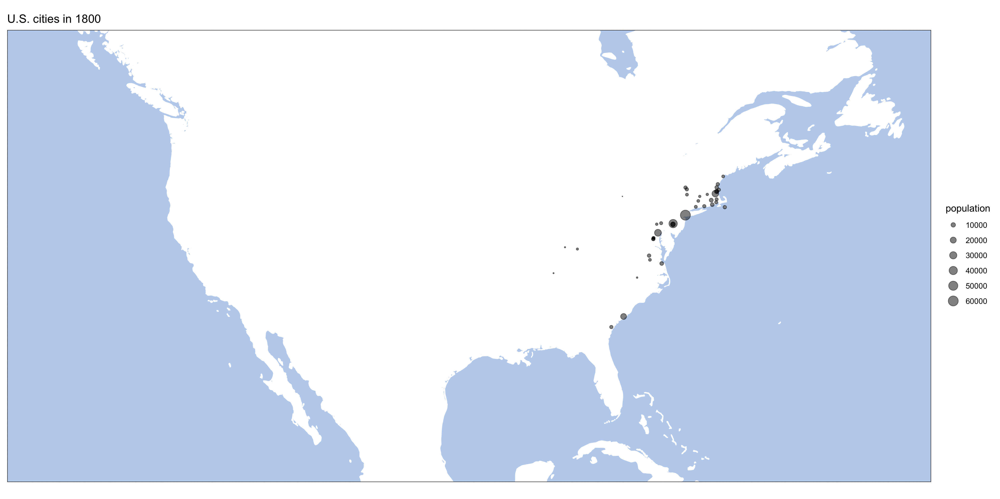
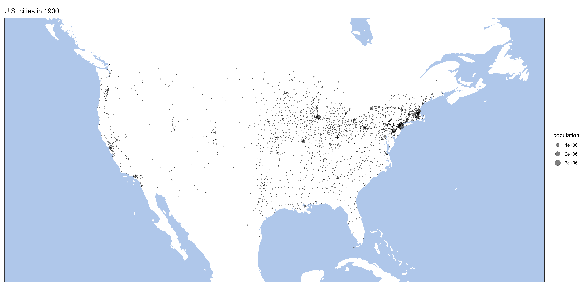
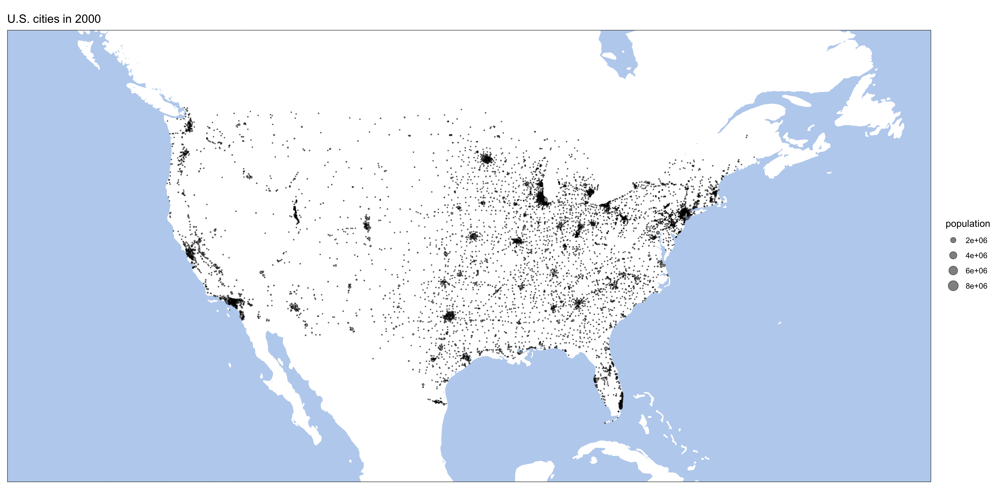
Homework: generate similar maps from europop data.
9.2.5 Animated Maps: Population by city — growth of the US
One last ting for today: animated maps. Package gganimate is a great tool fo rcreating animated graphs and maps.
#install.packages('gganimate')
library(gganimate)## Warning: package 'gganimate' was built under R version 4.0.2us_data <- historydata::us_cities_popLet’s start with a static plot, but first we need to prepare data. If our data is not prepared properly, our results may be very weird. Like on the map below:

Essentially, to avoid that we need to prepare data for each frame of our future animation. Our data is given for every 10th year (1790, 1800, 1810, etc.). gganimiate tries to fill in the blanks by creation transition frames. In other words, only every 10th frame shows the real data. There are multiple ways of how this issue can be solved. In the code below we create values for missing years — the value of each 10th year is assigned to years 11, 12, 13, etc. We use a for-loop for this.
waterColor = "lightsteelblue2"
xlim=c(-130, -60); ylim=c(23,52)
us_data_filtered <- us_data %>%
filter(between(lon, xlim[1], xlim[2])) %>%
filter(between(lat, ylim[1], ylim[2]))
us_data_filtered_enriched <- us_data_filtered
for (n in seq(1,9)){
temp <- us_data_filtered %>%
mutate(year = year + n)
us_data_filtered_enriched <- add_row(us_data_filtered_enriched, temp)
}
us_data_filtered_enriched <- us_data_filtered_enriched %>%
filter(year <= 2010)Now, the plot:
baseplot <- ggplot(data = world) +
geom_sf(fill="white", color="white") +
coord_sf(xlim = xlim, ylim = ylim, expand = FALSE)
usMap <- baseplot +
geom_point(data = us_data_filtered_enriched, aes(x=lon, y=lat, size = population), alpha = 0.1, show.legend = FALSE) +
scale_size_continuous(range = c(0.05, 5)) +
themeParameters
usMap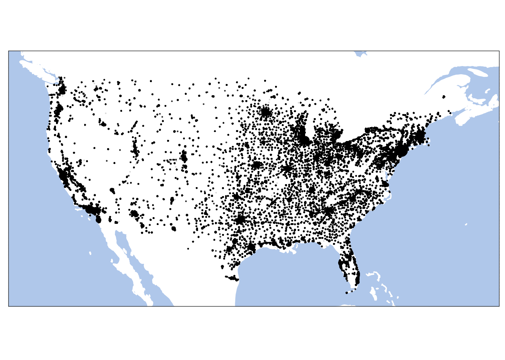
Now, the following code animates our map. And the last line saves our animation into a file. Check documentation for gganimate for many other options for saving animations. NB: Keep in mind that this process make take a while, so you do not want to rerun it every time you knit your notebook!
usMapAnimated <- usMap +
transition_time(year) +
labs(title = "Growth of the US cities: {frame_time}")
anim_save("usMap_Animated.gif", animation=usMapAnimated, end_pause = 10, rewind = FALSE, height = 5, width = 8, units = "in", res = 300)This is our animated map, which we saved into a gif file.

Homework: Animate any of the maps that you are tasked to prepare above.
9.3 Homework
- Homework is described in the lesson.
Submit your knitted notebook.
9.4 Submitting homework
- Homework assignment must be submitted by the beginning of the next class;
- Email your homework to the instructor as attachments.
- In the subject of your email, please, add the following:
070184-LXX-HW-YourLastName-YourMatriculationNumber, whereLXXis the numnber of the lesson for which you submit homework;YourLastNameis your last name; andYourMatriculationNumberis your matriculation number.
- In the subject of your email, please, add the following: